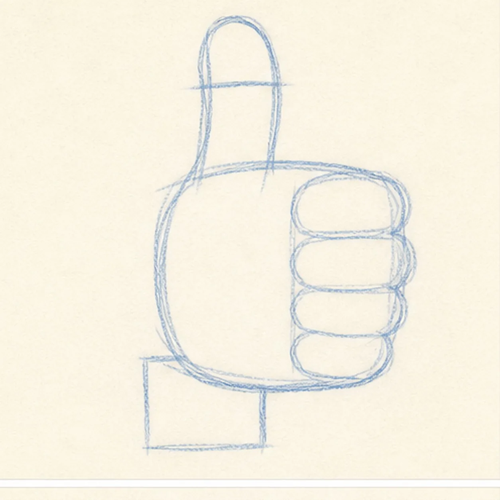
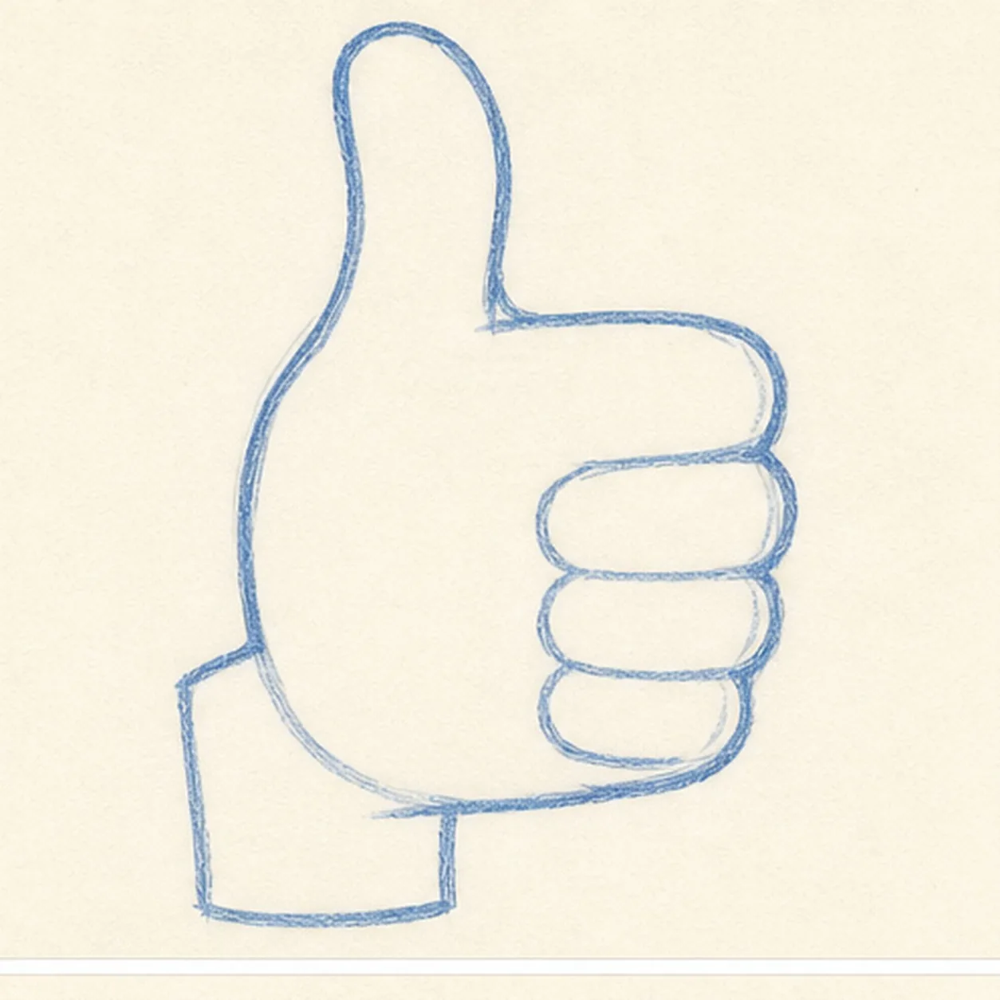
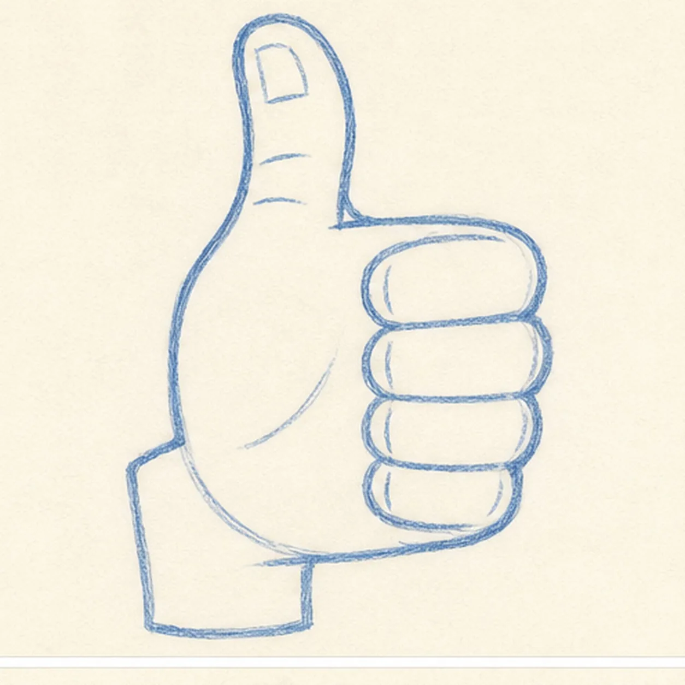
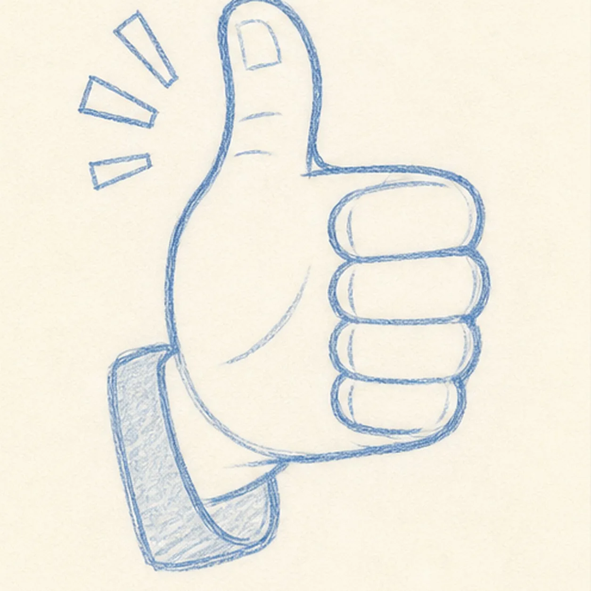

Felt-tip marker mode
Let's draw a cartoon thumbs-up hand
Treat this as one playful practice round: sketch the idea loosely, simplify the shapes, then commit with confident marker outlines and bright fills.
-
01

Block the hand gesture
Draw a light wrist rectangle and rounded palm, then place one tall thumb axis and four stacked rounded guides inside a compact folded-finger envelope.
Doodle tip: Ghost the thumb direction first and keep the four finger guides close to the palm. Treat their shared outside edge as one simple mass before you worry about dark separations.
-
02

Shape the thumbs-up silhouette
Wrap one chunky contour around the wrist, palm, raised thumb, thumb web, and the visible outside edges of all four folded fingers.
Doodle tip: Draw the thumb side in one confident pass, then rotate the page for the finger side. Keep the palm detail blank where the folded fingers sit in front.
-
03

Separate the fingers
Clarify the four light finger divisions, then add one simple thumbnail, two knuckle folds, and one curved palm crease inside the established hand.
Doodle tip: Count the finger shapes from top to bottom before darkening anything. Compare the narrow gaps between them so no extra digit sneaks into the gesture.
-
04

Add cuff and emphasis
Wrap a simple cuff around the established wrist and place exactly three short comic rays beside the raised thumb.
Doodle tip: Let the cuff echo the wrist angle, then aim the three rays outward like a small burst. You can change the cuff color later without changing the hand structure.
-
05
Ink and color the gesture
Trace the established hand, finger, cuff, and ray shapes in thick black marker, then fill the hand golden yellow, add orange lower-edge accents, and color the cuff and rays teal.
Doodle tip: Let the fills dry before reinforcing nearby black lines. Pull the yellow strokes along each finger so the visible marker texture follows the form.
-
06

Give the gesture a boost
Strengthen the existing outlines, finger divisions, crease marks, golden-yellow and orange fills, teal cuff, and three comic rays.
Doodle tip: Count one thumb and four folded fingers, then stop. The clear gesture already says plenty without a face, words, border, or extra prop.